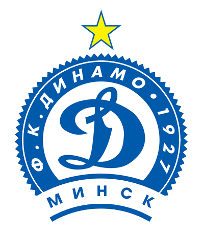

Динамо Минск выиграло батэ борисов 1:0
Михаил Козлов здорово подал с правого фланга в штрафную, где Евгений Шикавка грамотно выбрал позицию, перевесев в воздухе Волкова, и пробил головой в дальний угол. Это шестой гол нападающего в чемпионате.
Третье класико в сезоне завершилось в пользу минского «Динамо»
Иван Бахар ворвался во владения Чичкана, но в ближнем бою не смог переиграть вратаря. Козлов оказался первым на мяче и отправил его уже в пустые ворота. 2:0. Леонид Кучук с первого раза побеждает БАТЭ и сокращает отрыв от борисовчан до семи очков. Также победе динамовцев радуются в Солигорске и Бресте, чьи команды в субботу потеряли очки. Сам же БАТЭ прервал серию в 13 матчей без поражений во всех турнирах и в 12 в чемпионате. 